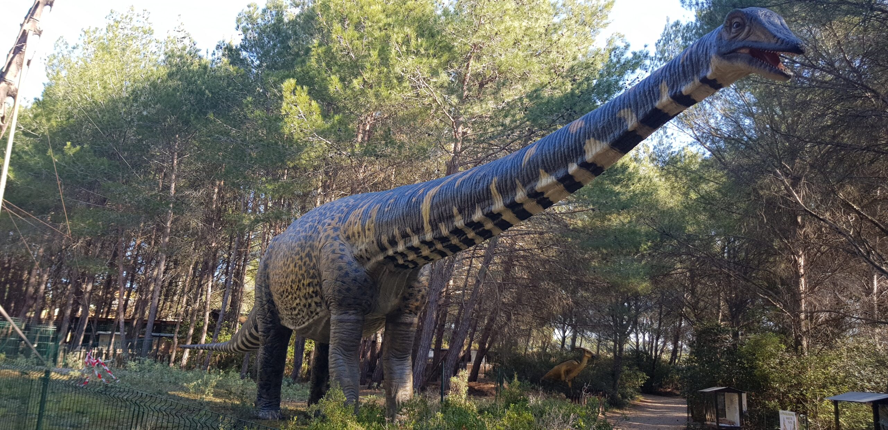

On ne visite pas une vitrine.
On marche sur le gisement.
Découvert en 1996 par le paléontologue Alain Cabot, le gisement de Montmèze est aujourd'hui classé 3e site mondial de pontes de dinosaures fossiles, derrière le désert de Gobi et le Montana. Quatre fossiles exposés sur cinq sont des originaux, pas des moulages.
Un gisement vivant, pas un décor
Le parcours traverse un terrain de fouilles réel, encore en activité. Ce que les visiteurs piétinent n'est pas une reconstitution : c'est le sol même où les paléontologues travaillent.
En 1996, en prospectant les formations rocheuses de la fin du Crétacé (entre -74 et -65 millions d'années), Alain Cabot met au jour ce qui s'avère être l'un des gisements paléontologiques les plus importants d'Europe. L'année suivante, il fonde sur place un musée en plein air de 6 hectares, au cœur d'une pinède languedocienne.
Le gisement s'étend sur 50 km², avec une couche fossilifère qui peut atteindre un kilomètre d'épaisseur par endroits — des milliers d'œufs y restent probablement encore enfouis. Une dizaine d'espèces d'œufs y ont été identifiées, en majorité de forme ronde et pondus par des herbivores ; l'une d'elles, de forme oblongue, a été nommée Prismatoolithus caboti en l'honneur de son découvreur, et compte parmi les plus petits œufs de dinosaure carnivore connus au monde.
Il y a 70 millions d'années, cette partie de l'Europe formait un archipel d'îles au climat tropical, peuplé de crocodiles, de tortues et de varans. Quatre espèces de dinosaures propres à la région ont été identifiées sur le site, dont une en collaboration avec l'université de Montpellier II : le Titanosaure (12 m), le Rabdodon (5–6 m), le Dromaeosaure (2,5 m) et le Struthiosaurus languedocensis (4 m).
Comment on fouille un nid d'œufs
Repérage
Des fragments de coquille enfoncés verticalement dans le sol, disposés en cercle, signalent la présence d'un nid.
Consolidation
Une tranchée est creusée autour du nid pour former une motte. Le nid est protégé par du papier humidifié, puis enveloppé dans une coque de plâtre armée de toile.
Retournement
Une fois le plâtre sec, la motte est retournée à l'aide de leviers puis acheminée vers le laboratoire.
Dégagement
Le dégagement fait apparaître les œufs un à un. Quelques jours plus tard, le nid est entièrement libéré et l'étude de la ponte peut commencer.
Ce que l'on croise sur le parcours
Reconstitutions grandeur réelle, fossiles originaux, œufs fossilisés et vues du chantier de fouilles — un aperçu de ce qui attend les visiteurs.
À voir en vidéo
La chasse aux œufs de dinosaures
Une vidéo tournée sur le gisement, montrant la recherche et l'extraction d'œufs fossiles.
Regarder sur dinosaure.eu ↗France 3 Ici — Occitanie
Un reportage télévisé consacré au musée et au gisement de Montmèze.
Regarder sur dinosaure.eu ↗Les pièces maîtresses du parcours
Des reconstitutions grandeur réelle mises en scène dans la pinède, des fossiles d'exception, et les empreintes qui ont fait la réputation scientifique du Languedoc.
Le parcours met en scène huit dinosaures reconstitués à l'échelle réelle : Tyrannosaure Rex, Spinosaure, Tricératops, Stégosaure, Iguanodon, Deinonychus, Troodon et Parasaurolophus.
Le point fort du musée reste le squelette de Brachiosaure, long de 25 mètres et haut de 12 — accompagné de ceux d'un Allosaure et d'un Tricératops.
Six pièces d'exception
Squelette de Brachiosaure
L'un des plus grands (12 m de haut, 25 m de long) et des plus lourds dinosaures herbivores. Les restes exposés proviennent d'une expédition tanzanienne de 1908.
Allosaurus fragilis
9 mètres de long, 3 mètres de haut. Mâchoires puissantes, griffes acérées : un prédateur théropode construit pour l'attaque rapide.
Tricératops
Sa tête seule pouvait mesurer 2 mètres. Collerette osseuse et trois cornes développées en faisaient un adversaire redoutable.
Crâne de T-Rex « STAN »
Découvert dans le Dakota du Sud dans les années 1990, ce spécimen a permis une reconstitution précise du « reptile tyran ».
Embryon de Titanosaure
Partiellement recouvert de peau fossilisée : une griffe, divers ossements et de nombreux fragments de peau pustuleuse.
Piste d'empreintes
Cette surface conserve les traces de deux dinosaures différents : un Platéosaure herbivore et de petites empreintes non identifiées.
Empreintes de pas du sud de la France
L'Aveyron, l'Hérault et le Gard renferment des milliers d'empreintes de dinosaures, étudiées par le paléo-ichnologue Jacques Sciau. Le musée en expose les moulages, réalisés avec l'association des Amis du Musée de Millau.
Hettangien (-205 à -200 Ma), découvert en 1997. Empreintes tridactyles de 40 à 50 cm, les plus grandes connues au monde pour le Jurassique inférieur. Ichnoespèce Eubrontes giganteus, attribuée à un grand théropode de 9 à 10 m proche du Mégalosaure.
Même période, découvert en 1997. Ichnoespèce Ornithopus fabrei : des carnivores légers, à la démarche rapide, dont les empreintes rappellent celles des oiseaux actuels.
Une empreinte isolée mais exceptionnelle : elle conserve les coussinets du pied et la texture de la peau de l'animal.
Horaires & tarifs
Dernière entrée aux caisses 1h30 avant la fermeture. Les chiens sont acceptés, tenus en laisse.
Tarifs d'entrée
| Catégorie | |
|---|---|
| Plein tarif | 16,00 € |
| Enfants 6–13 ans | 14,00 € |
| Enfants 3–5 ans | 9,00 € |
| Groupe adulte (10 pers. et +) | 15,00 € |
| Groupe scolaire | 8,50 € |
Une buvette propose collations et boissons sur place — il n'y a pas de restaurant. Une aire de pique-nique est accessible en juillet et août. L'eau du forage du site n'est pas potable. Groupes : réservation à reservationdino@outlook.com.
Anniversaires, fouilles et sorties scolaires
Au-delà de la visite libre, le musée accueille trois formules dédiées aux enfants et aux groupes.
Entrée au musée, invitations personnalisables, accès à l'aire de pique-nique et aux fouilles enfants. 8 enfants minimum, réservation obligatoire — un parent doit rester présent pour la surveillance du groupe.
| Adulte | 11,00 € |
| Enfant 6–13 ans | 11,00 € |
| Enfant 3–5 ans | 7,00 € |
Un espace de 60 m² où un squelette et des ossements de dinosaures sont enfouis dans le sable. Une initiation ludique aux méthodes de fouille archéologique — « de futures vocations naissent ainsi », selon le musée.
Un panorama complet, des dinosaures à la préhistoire humaine jusqu'à Homo sapiens. Durée environ 2h30 ; minimum 20 personnes pour un accès en semaine le matin. Pique-nique possible en pinède ou à la base de Bessilles (2,5 km) — prévoir eau et casquettes.
| Par enfant | 8,50 € |
| Accompagnateur (1 gratuit / 5 enfants) | 8,50 € |
| Chauffeur de bus | Gratuit |
Réservation : reservationdino@outlook.com ou 07 60 00 92 22 (9h–18h, 7j/7). Préciser établissement, ville, date, nombre d'enfants et d'accompagnateurs.
Huit questions qui guident la visite
Du nom donné aux dinosaures à leur disparition, le parcours répond, étape après étape, aux questions que tout visiteur se pose face au gisement.
Pourquoi « dinosaure » ?
Le mot vient du grec et signifie « terribles lézards ». Il a été créé en 1842 par le paléontologue britannique Sir Richard Owen pour désigner ces reptiles disparus dont on découvrait alors les premiers squelettes fossilisés.
Qu'est-ce qu'un dinosaure, exactement ?
Un dinosaure est un reptile particulier : ses pattes se tiennent verticalement sous le corps, et non sur les côtés comme chez les lézards actuels. La classification scientifique distingue deux grands groupes, les Saurischiens et les Ornithischiens, selon la structure de leur bassin.
Une famille bien plus vaste qu'on ne l'imagine
On recense environ 1000 espèces de dinosaures, réparties en 50 familles. Leurs tailles varient considérablement : certaines espèces n'étaient pas plus grandes qu'un chat, d'autres atteignaient 30 mètres de long et 12 mètres de haut.
Carnivores et herbivores
Les carnivores se nourrissaient de la chair d'autres animaux, grâce à des dents pointues adaptées à la capture et à la découpe. Les herbivores, eux, présentaient des régimes bien plus variés : feuillage tendre, végétaux ligneux ou plantes basses, selon la forme de leurs dents et de leur mâchoire.
Tous ovipares
Sans exception, tous les dinosaures pondaient des œufs. Certaines espèces utilisaient des monticules de végétation en fermentation pour maintenir une incubation naturelle, une technique que l'on retrouve chez certains oiseaux actuels.
La science qui lit la pierre
La paléontologie est littéralement « l'étude de ce qui est ancien ». Elle s'appuie sur l'examen des fossiles — ossements, œufs ou empreintes minéralisés au fil de millions d'années — pour reconstituer la vie disparue.
Pourquoi ont-ils disparu ?
Trois grandes hypothèses s'affrontent encore : la thèse impactiste, qui pointe un impact météoritique (le cratère du Yucatán) ; la thèse volcaniste, qui met en cause d'immenses éruptions volcaniques en Inde ; et la thèse gradualiste, qui privilégie des changements progressifs des écosystèmes.
Et s'ils n'avaient pas vraiment disparu ?
Les oiseaux actuels seraient les descendants directs de petits dinosaures carnivores. L'étude de l'Archéoptéryx, fossile charnière entre reptile et oiseau, a été déterminante pour établir ce lien.
Venir au musée
Le musée se situe en bordure de l'étang de Thau, à mi-chemin entre Montpellier et Béziers (35 km de chacune), entre Mèze (5 km) et Montagnac (6 km).
Autoroute A9, sortie n°33 « Sète / Mèze », puis RD613 jusqu'à Mèze. Continuer direction Béziers pendant 5 km et tourner à droite juste après Montmèze.
Prendre l'A75 (gratuite) direction Clermont-Ferrand, sortie n°59. Suivre la RD613 sur 4,5 km après Montagnac, puis tourner à gauche au grand dinosaure visible depuis la route.
Entrer « Mèze 34140 » puis l'adresse Montmèze. 300 mètres après Montmèze, tourner à droite pour accéder au musée.
Direction Marseillan-Plage, puis Marseillan ville, puis RD613 vers Mèze. Traverser la zone artisanale en suivant « Béziers / Montagnac / Musée parc dinosaure », puis Montmèze et à droite au carrefour.
Nous écrire, nous appeler
- Adresse
- Musée-Parc des Dinosaures
RD613, Route de Pézenas, Montmèze
34140 Mèze - Téléphone
- 07 60 00 92 22 · 06 67 48 29 20
- Email général
- mezedinosaure@yahoo.com
- Réservation groupes
- reservationdino@outlook.com